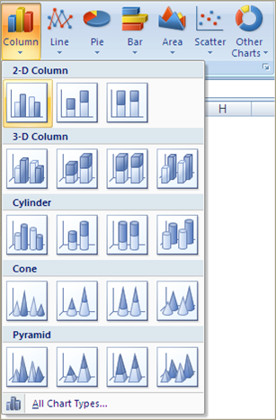
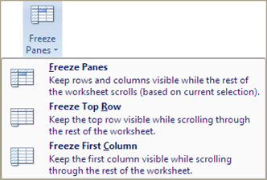

Excel

I may trash talk excel , but I would argue that it is the most used tool for accountants. Accountants are the original data scientists1 and their weapon of choice has been excel. A large portion of this class will be using R, BUT I hope to show you that R and Excel can work together. At the very least you will learn how to do everything we see in this module in R and you can decide which tool you want to use. This case study is provided by PWC. It was developed for a masters level course, but I am adapting it for our class. This should be a Review and I plan to move through this quickly. But, as always, you can slow me down with questions and comments.
Module Objectives
Demonstrate knowledge of data quality concepts
Demonstrate knowledge of key terms and capabilities in Excel
Demonstrate how to use Excel to acquire, transform, analyze, and visualize data
Demonstrate knowledge of leading practices for presenting findings in Excel
Why excel?
- We have no choice everybody uses it! - this is the hard truth
- Easy-to-use <- debatable
- Many different functions

- Advanced capabilities through add-ins
- Easy to explore and manipulate the data
- Can present data and analysis together
- Integrated with common desktop applications
But
- Significant potential for human error
- Limited scalability
Keep it simple and ask the Internet!
Key terms
| \(\color{red}{\text{Term}}\) | \(\color{red}{\text{Definition}}\) |
|---|---|
| Workbook | An Excel file is referred to as a workbook |
| Worksheet | A single tab or sheet within a Workbook |
| Cell | The boxes within the worksheet where information is stored. Cells are referenced by column letters (A, B, C, ) and row numbers (1, 2, 3, ) like a map: |
|
|
| Range | A contiguous set of cells referenced by the top left and bottom right cells, separated by a colon (:): |
|
Cell References
Excel formulas can reference different cells
Changes to the referenced cells result in updates to value calculated by the formula

Inputs within functions can be either a single cell reference or a block of cells referred to as a range.
The two example below provide the same result:
| =SUM(C1,C2,C3) | Single cells selection- \(\color{red}{\text{Use the Ctrl Key}}\) |
|
|---|---|---|
| =SUM(C1:C3) | Range selection- \(\color{red}{\text{use Shift Key or Drag with mouse}}\) |
 |
Note: should a row be inserted between C1 and C3, then example 1 will still provide the same results, however example two will extend to add 4 cells.
Absolute cell references
Absolute referencing is a way of referring to cells within formulas so that once copied, the cell reference remains fixed to a particular cell
Relative referencing As a formula is copied along, the row/column numbers adjust accordingly |
|
Absolute referencing As a formula is copied along, it continues to refer to the same cell as before |
Absolute cell referencing
With absolute cell referencing, a dollar sign ($) appears in the cell reference:
- =B4 Refers to column B and row 4,
But this will vary if the formula is copied across a range of cells \(\color{red}{\text{(relative reference)}}\)
- =$B4 Will always refer to column B, but row reference can vary
- =B$4 Will always refer to row 4, but column reference can vary
- =$B$4 Will always refer to column B and row 4
\(\color{red}{\text{(absolute reference)}}\)
Keyboard shortcut F4 cycles through the four absolute cell reference options
Formulas
Excel calculations are specified with formulas in each cell
To create a formula, type an equals sign (=) followed by the function and required arguments
Order of Operations
| Brackets | ( ) |
| Exponent | ^ |
| Division/Multiplication | / * |
| Addition/Subtraction | + - |

Functions
The fx button to the left of the formula bar opens a list of all available functions
Arguments
Functions take zero or more inputs or arguments
=FUNCTION(Input1,Input2,)
Arguments can be:
| Values | 1, 2, 3 or 1.2, 3.6, 2.1 or x, y, z or TRUE, FALSE |
| Cell References | B91, A452, C3 |

Navigation shortcuts (Windows)
| Ctrl + (,,) | navigate to the last non-empty cell in that direction |
| Ctrl + Shift + (,,) | select a block of cells to last non-empty cell in that direction |
| Ctrl + Space | select the entire column of the cell you have selected |
| Shift + Space | select the entire row of the cell you have selected |
Acquire data
Getting data into excel
Excel files have the extension .xlsx or .xls (older versions)
Excel can also import data from delimited text files
Some comma-separated values files can be opened directly by Excel
Tab-separated values can be copy-and-pasted directly into an Excel worksheet
Delimited text can also be copy-and-pasted into Excel and then separated with text-to-columns

Example - Delimited text
Text to columns
- You might have text in one column that should be split across multiple columns, such as 1-Q-Fred in the example below
- You can use the Text to Columns wizard to accomplish this

Follow the steps prompted when clicking the icon in the Data tab. You can specify:
- Whether the separation point is defined by a certain character (Delimited) or at a fixed point in the cell (Fixed Width).
- What character separates the information
- Where you would like the newly separated information to go.
References to worksheets and workbooks
- You can also use data from other worksheets or other workbooks in your formulas
- Another worksheet in the same workbook is represented by Sheet!
- A worksheet in a different workbook is represented by [Workbook.xlsx]Sheet!

Sample spreadsheet
Sorting
Highlight a range and use the Sort option to order records by one or more columns
Make sure to select an entire table to avoid sorting only part of it
Filters
Filtering allows you to hide rows in a range if they dont match select criteria
Highlight the range and click the Filter button

Custom filters
Custom filters allow you to use multiple criteria such as AND or OR
- Click on drop down arrow
- Click Text Filters
- Choose Custom

Summary statistics
COUNT() - Counts numbers
COUNTBLANK() - Counts empty cells
COUNTA() - Counts non-empty cells
MIN() - Returns minimum
MAX() - Returns maximum
AVERAGE() - Returns average/mean
ROWS/COLUMNS() - Return number of rows/columns
Status Bar
Highlighting a range of cells returns summary statistics on the status bar in the lower right corner
This is a quick way to get information about part of your data

Can we rely on the data?

Data quality dimensions

Exercise - Data quality dimensions
Identify which of the six DQ dimensions applies to the issues described below \(\color{red}{\text{(please do not peek at the answers )}}\):
Gender field has the special characters like ~!@#$%^*();
Answer
[1] "Validity"First name is blank or Null
Answer
[1] "Completeness"Last name field has only designators such as LLP, LLC, Mr., Mrs., etc
Answer
[1] "Accuracy"Address field has only numbers
Answer
[1] "Validity"Account Type field does not have pre-defined list of values
Answer
[1] "Consistency"Account Number field have duplicate values
Answer
[1] "Integrity"Forex rate field does not have up to date exchange rate
Answer
[1] "Timeliness"
Exercise - Excel #1
Load the data from payroll_data.txt and reference_data.txt into two tabs in an Excel spreadsheet and save it as Payroll Data_<NETID>.xlsx \(\color{red}{\text{(please do not peek at the answers)}}\) :
How did you import the data?
Answer

How many rows are there?
Answer
[1] "payroll_data = 202 rows including header" [2] "reference_data = 199 rows including header"How many columns?
Answer
[1] "payroll_data = 9 columns" "reference_data = 3 columns*"What is the average salary?
Answer

How many missing values are in each column?
Answer

What potential data quality issues do you find? Which dimensions are they related to?
Answer (one example)
Transform Data
Data formats
Data entered an Excel worksheet can be represented in different formats, for example:
- Number
- Currency
- Percentage
- Text
- Date
Dates are stored as the number of days from a fixed historical date
Text functions
- =CONCATENATE (text1, text2, ) or &
Appends two or more strings
- =MID(text, start_num, num_chars)
Extracts a specific number of characters starting from a given position

- =LEFT(text, num_chars)
Extracts a specific number of characters from the left of a cell
- =RIGHT(text, num_chars)
Extracts a specific number of characters from the right of a cell
- =LEN(text)
Return the number of characters (including spaces) in a cell
- =SUBSTITUTE(text, old_text, new_text)
Replaces a string with another string
- =FIND(find_text, within_text, start_position)
Return the position of a match and error if no match
Number functions
- =ROUND(number, num_digits)
Rounds a figure to a specified number of digits
- =LARGE(array, k)
Returns the kth largest number
- =SMALL(array, k)
Returns the kth smallest number
- =PRODUCT(number1, number2, )
Multiplies several values together
- =EXP(number)
Returns Eulers number (e) raised to a number
- =RAND()
Returns a random number between 0 and 1
- =RANDBETWEEN(bottom, top)
Returns a random integer between the specified values
Date/time functions
- =TODAY()
Displays current date
- =NOW()
Displays current date and time
- =DATE(year, month, day)
Generates a date given day, month, and year
- =DAY(serial_number)
Determines day of date, e.g.31
- =MONTH(serial_number)
Determines month of date, e.g.12
- =YEAR(serial_number)
Determines year of date, e.g.2001
- =WEEKNUM(serial_number)
Returns the week number in the year
- =WEEKDAY(serial_number)
Returns the position of the day in a workweek
- =DAYS(end_date, start_date)
Returns number of days between two dates
- =NETWORKDAYS(start_date, end_date)
Returns the number of working days between dates
Fill
You can apply a formula to an entire column by using the Fill options
You can also Fill Down by double-clicking a cell with a formula in a table

Error trapping
- =ISNA(value)
Determine if cell or result of formula is showing #N/A!
- =ISERROR(value)
Determine if cell or result of formula is an error
- =IFERROR(value, value_if_error)
Give an alternative result if the formula produces an error

IF statements
IF() analyses the contents of one or more cells to determine whether a condition is TRUE or FALSE
Given the value of the condition, different values can be returned
Syntax
=IF ( \(\color{darkred}{\text{logical_test}}\) , \(\color{red}{\text{value_if_true}}\) , \(\color{maroon}{\text{value_if_false}}\) )
Examples
=IF ( \(\color{darkred}{\text{B1 > 50}}\) , \(\color{red}{\text{B1 * A1}}\), \(\color{maroon}{\text{B1 * A3}}\))
=IF ( \(\color{darkred}{\text{B1 > B2}}\) , \(\color{red}{\text{B1}}\) , \(\color{maroon}{\text{B2}}\) )
=IF ( \(\color{darkred}{\text{B1 = "awesome"}}\) , \(\color{red}{\text{B1}}\) , \(\color{maroon}{\text{B2}}\) )
Conditional operators
Any function can be used with conditional operators in IF statements to test conditions
> Greater than
< Less than
>= Greater than and equal to
<= Less than and equal to
<> Not equal to
= Equal to
NOTE:
Some of functions can be used only on numbers, some to dates and some to strings.
- Addition: Numbers, Dates
- Subtraction: Numbers, Dates
- Multiplication: Numbers
- Division: Numbers
- Power: Numbers
- (): Anything
- Order operators (>,< etc.) : Numbers, Dates, Strings
- Concatenation: Anything
Nested conditional statements
=IF (\(\color{darkred}{\text{logical_test}}\) , \(\color{red}{\text{value_if_true}}\) , IF (\(\color{darkred}{\text{logical_test}}\) , \(\color{red}{\text{value_if_true}}\) , \(\color{maroon}{\text{value_if_false}}\) ))

=IF ( \(\color{darkred}{\text{B1 > 50}}\) , \(\color{red}{\text{B1 * A1}}\), IF ( \(\color{darkred}{\text{B1 > 150}}\) , \(\color{red}{\text{B1 * A2}}\), \(\color{maroon}{\text{B1 * A3}}\)) )
Logical operators
=AND(\(\color{darkred}{\text{logical1}}\), \(\color{red}{\text{logical2}}\), ) Gives True if all the conditions are met
=OR(\(\color{darkred}{\text{logical1}}\), \(\color{red}{\text{logical2}}\), ) Gives True if at least one condition is met
=NOT(\(\color{darkred}{\text{logical}}\)) Gives True if the condition is not met
VLOOKUP
- Often we need to add data from one table to another. This requires one column in each table to act as the link between them
- VLOOKUP searches vertically down the left-hand column of a table to find a match, then returns the corresponding value from a specified column of the table
- In most cases, the fourth argument should be FALSE to require exact matches
Always use absolute cell references to specify the range containing the lookup data

Unique values and duplicates
- Excel has an option to reduce a single column to its unique values
- This option can also remove duplicate rows from a table across multiple columns
Find/Replace
You may need to find or replace values across a worksheet or workbook, which would be time-consuming if done manually
Use Find/Replace to do this efficiently:
Ctrl + F: find
Ctrl + H: replace
Excel will search the whole worksheet (or workbook) unless a range is selected
The Options >> button enables the use of requirements such as Match case

Exercise Excel #2
In Payroll Data_<NETID>.xlsx \(\color{red}{\text{(please do not peek at the answers)}}\) :
Address any data quality issues identified previously.
Create a new column with total compensation (salary plus overtime pay) what is the average total compensation?
Answer

Add a column for the employees tenure at the company in years.
Answer

It turns out that all of the NJ employees work for separate division called Tasty New Jersey. Correct the Division column with this information.
Answer


Create a binary column (0/1) that identifies employees of the Tasty operating units.
Answer

Add columns for Job Position and Gender from the Reference Data worksheet.
Answer

Select a random 5% sample of employees to receive a survey.
I had to search the web for this one

Analyze data
Pivot tables
A pivot table is an aggregation of a source table
Supports summary statistics:
- Count
- Sum
- Min/Max
- Average

This summary is presented in a table format which can be formatted and filtered
A table with categories down the rows and across the columns is a cross table
| \(\color{red}{\text{Sum of Sales}}\) | \(\color{red}{\text{Month}}\) | |||
|---|---|---|---|---|
| Salesperson | Jan | Feb | Mar | Grand Total |
| Bert | 7508 | 10360 | 6281 | 24149 |
| Bill | 5113 | 8916 | 7642 | 21671 |
| Fred | 7561 | 9735 | 11221 | 28517 |
| Harry | 10513 | 3583 | 9452 | 23548 |
| Grand Total | 30695 | 32594 | 34596 | 97885 |
Customizing pivot tables

Analysis ToolPak
Excel can be used for more advanced analysis than summary statistics and charts
- Click the File tab, click Options, and then click the Add-Ins category
- In the Manage box, select Excel Add-ins and then click Go
- In the Add-Ins box, check the Analysis ToolPak and Solver check boxes, and then click OK
- Go to the Data tab and look for the Analysis section
Descriptive statistics

Histograms
A histogram depicts the frequency or probability distribution of a numeric variable across bins of equal width
Variable distributions may appear statistically normal or display non-normal characteristics such as skewness or kurtosis
Create a histogram through Data analysis by specifying the bins in a separate range
Correlation
The CORREL() function (and Data Analysis correlation option) quantify the direction and degree of the relationship between two variables
Correlation coefficient is between -1 and1:
Negative values indicate the variables are inversely related
Positive values indicate the variables are directly related
Values close to zero indicate a weak correlation
Values close to 1 indicate a strong correlation
- Correlation is often best visualized with a scatter plot
Linear regression (univariate)
In addition to descriptive statistics, Excel can build and evaluate simple predictive models:
- Select Regression from the Data Analysis section
- Select your dependent (Y) variable (to be predicted)
- Select your independent (X) variable (used to predict the Y variable)
- Check boxes for optional outputs (e.g.residuals, line fit plot)
Linear regression output

Exercise #3
In Payroll Data_<NETID>.xlsx \(\color{red}{\text{(please do not peek at the answers)}}\):
What is the average percentage of total compensation that is overtime pay, not including staff with no overtime pay?
Answer

Create a pivot table with the following statistics by Operating Unit:
- Number of employees
- Average total compensation
- Average tenure (in years)
Answer

Add Job Title to the pivot table across the columns
Answer
What is the correlation between total compensation and tenure?
Answer
Create a histogram for total compensation how would you characterize the distribution? What if you transform the data to reduce any skewness?
Answer
Create a linear regression model using tenure to predict total compensation what is the adjusted R-squared value?
Answer
Present findings
Visualization in excel
Visualization is often essential for gaining an understanding of the data and presenting findings to a new audience
Excel can easily produce a variety of basic charts
For an effective visualization, always consider:
- What question do I want to answer?
- What message do I want my audience to take away?
- How can I keep it simple?
Well focus more on visualization later in the course
Conditional formatting
- Conditional formatting adjusts the color of a cell according to the relative magnitude of the values or established rules
- It is commonly used for RAG (Red/Amber/Green) reports, in which good figures are highlighted in green and bad ones in red, but any gradient can be applied

What do you think of this visualization?
What about this one?
Manchester University has low teaching scores compared to its competitors
Effective visualization
- More information, less ink
- Clear out the junk!
- Use color, shape, placement, etc. to draw attention
- Use 2D rather than 3D charts

Basic charts
Insert chart
- The first step to setting up your chart is to arrange the data into a table
- Then select the table and select the type of graph you are looking for on the Insert tab

Axis settings

Data labels

Gridlines

Titles

Data in rows or columns

Changing data range
Sometimes we want to change the data range covered by a chart or add an extra series
When you select a data series on a chart, the source data range can be adjusted
Select data source
You can also use the Select Data Source dialog box from the Design tab in the ribbon or by right-clicking the chart to add a new series to a graph
Pivot charts
In addition to creating a Pivot table on the data, you can also create a Pivot Chart which is based on the Pivot table itself
Changes made to the chart are replicated on the table and vice versa
Exercise #4
In Payroll Data_<NETID>.xlsx \(\color{red}{\text{(please do not peek at the answers)}}\):
I am not going to liethese took longer than they should have.
Create a pivot table with average salary by Operating Unit and State and add conditional formatting.
Answer

Create a bar plot with the number of employees by State
Answer
Create a scatter plot of salary and tenure
Answer
Create a line chart to show the cumulative number of employees hired by year.
Answer
Preparing the final workbook
Getting an Excel file into a presentable state can be a challenge
Storyboard your workbook and consider how someone would read through it
Keep it simple!
The following approaches can help with the finishing touches:
- Formula auditing
- Page layout
- Freeze panes
- Validation
- Removing gridlines
Formula auditing
To check that formulas have the right cell references, use Trace Precedents or Trace Dependents to display an arrow between linked cells
Removing gridlines
One quick tip for making a workbook look instantly less cluttered is to remove the gridlines
Freeze panes
- As worksheets can get very large, it is important to ensure that the data being viewed on screen at all points has titles and comments representing the appropriate columns
- Freeze panes allows for parts of the Excel document to be frozen, useful to preserve titles and headings
- Freeze Panes freezes all rows above the selected cell and all columns to the left of the selected cell
- Other variations are Freeze Top Row and Freeze First Column

Page layout
To ensure that the worksheet prints neatly, you may need to change settings on the Page Layout tab:
- Changing the page orientation (Portrait vs Landscape)
- Adjusting the margins
- Specifying a print area (the part of the worksheet that will be printed)
- Setting up page breaks at particular points
Use Print Preview to check how your worksheet will look when printed
Data validation
Data validation controls what type of data a user can input into a cell, for example:
- Only a number within a certain range
- Only a time/date within a certain period
- Only an item from a predefined list

More leading practices
- Save your workbook with A1 as the active cell
- Put a title and description for the workbook in the upper left corner of the first sheet
- Name your spreadsheet tabs so users can easily navigate throughout your workbook
- Dont hide columns or rows; instead, group them
- Consider if hardcoded parameters make sense or should be avoided
- Be careful with merged cells
- Keep source data in the workbook
- Break down complicated formulas
Assignment
Turn in your spreadsheet with all of the exercises answered and clearly marked.
Summary
Acquire data
| \(\color{red}{\text{Task}}\) | \(\color{red}{\text{Description}}\) | \(\color{red}{\text{Excel}}\) |
|---|---|---|
| Data access | Connect to a data source | File > Open Open in text editor and copy/paste |
| Importing data | Read the data into an analytical environment | Text Import Wizard Data > Text to Columns |
| Data profiling | Review data dimensions and summary statistics | COUNT() MIN(), MAX(), etc. |
| Data quality assessment | Identify aspects of the data that pose challenges for subsequent analysis | Sort Filter COUNTBLANK() |
| Data simulation | Generate data based on analytical requirements | RAND() RANDBETWEEN() CHOOSE() |
Transform data
| \(\color{red}{\text{Task}}\) | \(\color{red}{\text{Description}}\) | \(\color{red}{\text{Excel}}\) |
|---|---|---|
| Cleaning data | Address data quality issues to facilitate analysis | Find/Replace |
| Changing data types | Convert a value to the appropriate format for analysis | Format |
| Filtering data | Create subsets of records and features based on specified conditions | Filter IF() |
| Deriving data | Create new features from original features | MID() FIND() LEN() ROUND() WEEKDAY() |
| Scaling data | Put features with different ranges of values on the same scale while preserving relative values | SUM() AVERAGE() EXP() |
| Sampling data | Create subsets of records based on a probability distribution | RAND() RANDBETWEEN() |
| Aggregating data | Return a statistic or value for one feature according to different values of another feature | Pivot Table |
| Reshaping data | Change whether values are represented in different records or different features | Pivot Table |
| Concatenating data | Combine data sets through juxtaposition | Cut and paste |
| Merging data | Combine data sets by matching records on a common identifier | VLOOKUP() HLOOKUP() INDEX()/MATCH() |
Analyze data
| \(\color{red}{\text{Task}}\) | \(\color{red}{\text{Description}}\) | \(\color{red}{\text{Excel}}\) |
|---|---|---|
| Summary analysis | Calculate representative statistics for features of interest | AVERAGE() MEDIAN() PERCENTILE.INC() |
| Perform statistical tests | Estimate the probability that the data supports a specific claim | Data Analysis Toolpak |
| Clustering | Identify similar groups of records | |
| Predictive modeling | Use one set of features to predict the value of another feature | Data Analysis Toolpak |
| Network analysis |
Present findings
| \(\color{red}{\text{Task}}\) | \(\color{red}{\text{Description}}\) | \(\color{red}{\text{Excel}}\) |
|---|---|---|
| Data visualization | Display data using lines, shapes, colors, and other abstract representations | Charts |
| Dashboarding | Create a collection of dynamic visualizations | Charts |
| Exporting data | Produce output from an analytical environment for future use | File > Save As |
| Make recommendations | Use results of data analysis to guide decision-making |